Map both endpoints
Provide the addresses and explain what needs to move between the sites.
SITE-TO-SITE CONNECTIVITY
Perhaps your office and warehouse need to exchange files. Or your branch needs access to an application at the main site. Point-to-point connectivity links two agreed locations without treating every task as a public internet session.
Ask about point-to-point ↗
WHERE IT HELPS
HOW IT WORKS
A simple view of a typical setup.
The exact design is agreed for your service.

LET’S WORK IT OUT
Provide the addresses and explain what needs to move between the sites.
Discuss route feasibility, bandwidth, handover equipment and security responsibilities.
Agree on testing, acceptance and who manages the equipment at each end.
BEFORE WE TALK
You don’t need a technical brief. Start with what you know; we can talk through the rest.
QUESTIONS WE CAN HELP WITH
Not automatically. Point-to-point service connects the agreed locations. Internet access can be discussed separately if your setup needs it.
No. Privacy of the route and encryption are different things. Ask about the security design and whether your firewalls or other equipment need to encrypt the traffic.
HAS NETWORKS · SHERGARH, MATHURA
Share your location and what you’re trying to do. We’ll discuss availability, scope and a suitable next step.